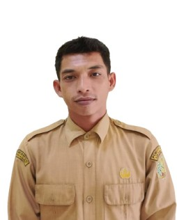
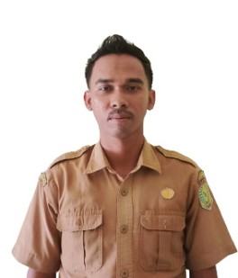

RAMDI, S.I.P
Pemimpin Pemerintahan Desa
Kepala Desa Ramdi, S.I.P bertanggung jawab untuk memimpin pemerintahan desa dan mengembangkan desa untuk kesejahteraan masyarakat.

JOHARI
Koordinator Administrasi
Sekretaris Desa membantu Kepala Desa dalam mengelola administrasi dan koordinasi operasional desa.

RUSLIANSYAH FARMANTO
Kepala Seksi Pelayanan
Mengelola pelayanan publik dan memastikan kualitas layanan kepada masyarakat desa.

JESI SRINITA, S.Pd
Kepala Seksi Pemerintahan
Bertanggung jawab dalam mengelola urusan pemerintahan dan administrasi desa.

MERIANA, S.Tr.T
Kepala Seksi Keuangan Desa
Mengelola keuangan desa dan memastikan transparansi dalam penggunaan anggaran desa.

PUPUT
Kepala Seksi Kesejahteraan
Bertanggung jawab dalam mengelola program kesejahteraan sosial di desa.